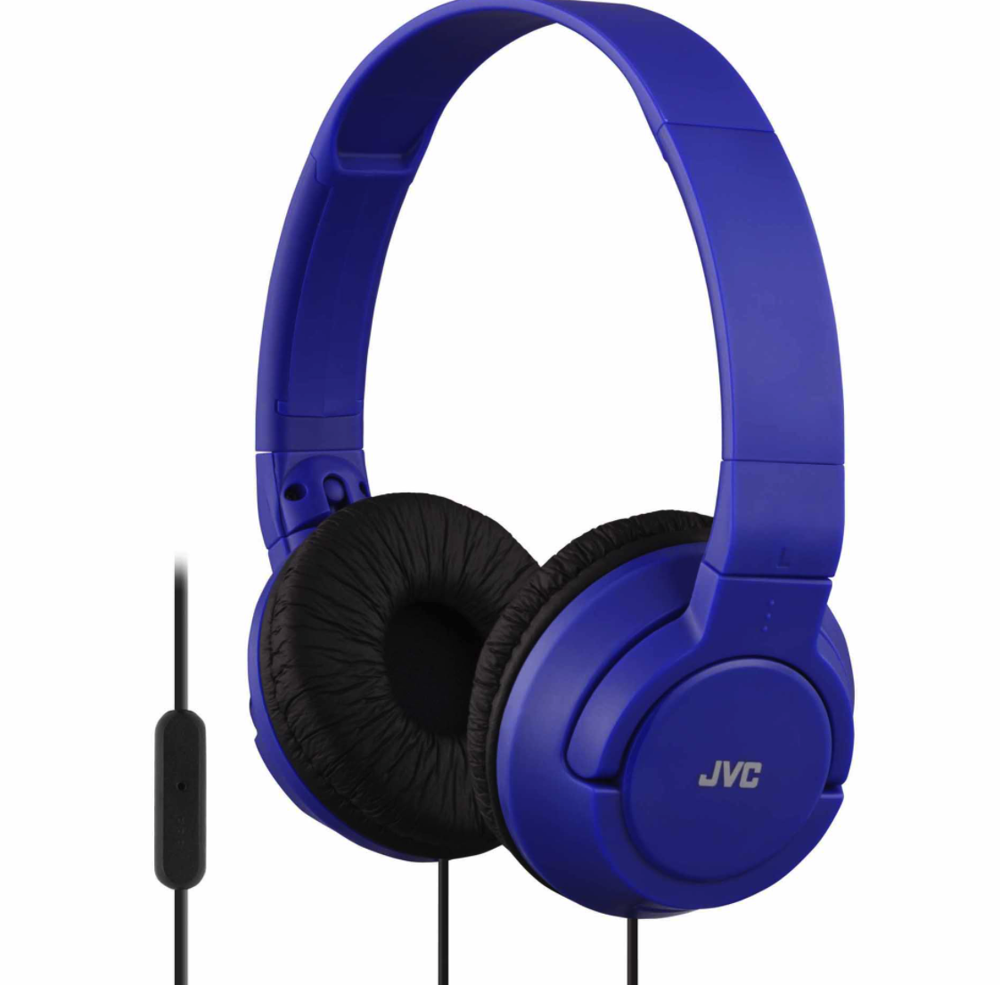

Test Image-

Output on Microsoft Azure - A close up of a blue wall
Output on Mobilenet Model - microphone, mic
Test Image-

Output on Microsoft Azure - A close up of a piece of paper
Output on Mobilnet Model - binder, ring binder
MOBILENET predicted all of the images more accurately than MICROSOFT AZURE. My casestudy is now finished, and I have concluded that MOBILENET is more accurate.